Welcome! I do research in computational mathematics with a focus on optimization and machine learning.
I am an assistant professor in the School of Operations Research and Information Engineering (ORIE) at Cornell University.
Research Area
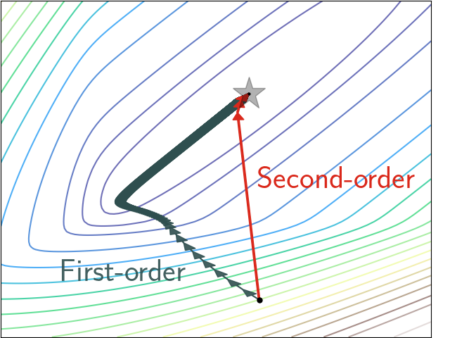
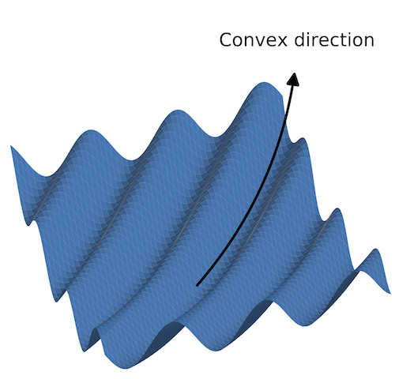
I develop provably efficient optimization algorithms that exploit problem structure and combine ideas from various fields. I specialize in second-order methods and their global complexity bounds. My research bridges the gap between optimization theory and computational practice to enable faster training and better understanding of modern AI models.
More broadly, I work on:
- Optimization theory and algorithmic foundations of AI
- Convex and non-convex problem classes, complexity bounds
- Applications in statistics, machine learning, and scientific computing
- Scalable, distributed, and decentralized optimization
I received my PhD in 2021 at UCLouvain, Belgium, supervised by Yurii Nesterov. My thesis is New second-order and tensor methods in Convex Optimization. After that, I was a postdoctoral researcher at EPFL, Switzerland, working in the Machine Learning and Optimization Laboratory with Martin Jaggi.
Teaching
- ORIE 6365: Continuous Optimization: Algorithms and Complexity, Spring 26 (lecture notes)
Papers
Recent preprints / various:
-
Universal Reduced-Operator Method and High-Order Global Curvature Bounds.
Nikita Doikov, Yurii Nesterov, 2025 (arXiv)
Refereed publications:
2026
-
On the Complexity of Lower-Order Implementations of Higher-Order Methods.
Nikita Doikov, Geovani Nunes Grapiglia (To appear in Math. Prog, arXiv) -
Complexity of Minimizing Regularized Convex Quadratic Functions.
Daniel Berg Thomsen, Nikita Doikov (To appear in SIOPT, arXiv) -
PACER: Acyclic Causal Discovery from Large-Scale Interventional Data
Ramon Viñas Torné, Sílvia Fàbregas Salazar, Soyon Park, Ivo Alexander Ban,
Artyom Gadetsky, Nikita Doikov, Maria Brbić (ICML, arXiv) -
Gradient-Normalized Smoothness for Optimization with Approximate Hessians.
Andrei Semenov, Martin Jaggi, Nikita Doikov (ICLR, arXiv)
2025
-
Minimizing Quasi-Self-Concordant Functions by Gradient Regularization of Newton Method.
Nikita Doikov (Math. Prog, arXiv) -
Lower Complexity Bounds for Minimizing Regularized Functions.
Nikita Doikov (Optim. Lett, arXiv) -
On-Device Collaborative Language Modeling via a Mixture of Generalists and Specialists.
Dongyang Fan, Bettina Messmer, Nikita Doikov, Martin Jaggi (ICML, arXiv) -
Improving Stochastic Cubic Newton with Momentum.
El Mahdi Chayti, Nikita Doikov, Martin Jaggi (AISTATS, arXiv) -
Cubic regularized subspace Newton for non-convex optimization.
Jim Zhao, Aurelien Lucchi, Nikita Doikov (AISTATS, arXiv) -
First and zeroth-order implementations of the regularized Newton method with lazy approximated Hessians.
Nikita Doikov, Geovani Nunes Grapiglia (Sci. Comp, arXiv)
2024
-
Spectral Preconditioning for Gradient Methods on Graded Non-convex Functions.
Nikita Doikov, Sebastian U. Stich, Martin Jaggi (ICML, arXiv) -
On Convergence of Incremental Gradient for Non-Convex Smooth Functions.
Anastasia Koloskova, Nikita Doikov, Sebastian U. Stich, Martin Jaggi (ICML, arXiv) -
Unified Convergence Theory of Stochastic and Variance-Reduced Cubic Newton Methods.
El Mahdi Chayti, Martin Jaggi, Nikita Doikov (TMLR, arXiv) -
Super-Universal Regularized Newton Method.
Nikita Doikov, Konstantin Mishchenko, Yurii Nesterov (SIOPT, arXiv, code)
2023
-
Linearization Algorithms for Fully Composite Optimization.
Maria-Luiza Vladarean, Nikita Doikov, Martin Jaggi, Nicolas Flammarion (COLT, arXiv) -
Polynomial Preconditioning for Gradient Methods.
Nikita Doikov, Anton Rodomanov (ICML, arXiv) -
Second-order optimization with lazy Hessians.
Nikita Doikov, El Mahdi Chayti, Martin Jaggi (ICML, arXiv) -
Gradient Regularization of Newton Method with Bregman Distances.
Nikita Doikov, Yurii Nesterov (Math. Prog, arXiv)
2022
-
High-Order Optimization Methods for Fully Composite Problems.
Nikita Doikov, Yurii Nesterov (SIOPT, arXiv) -
Affine-invariant contracting-point methods for Convex Optimization.
Nikita Doikov, Yurii Nesterov (Math. Prog, arXiv, code)
2021
-
Local convergence of tensor methods.
Nikita Doikov, Yurii Nesterov (Math. Prog, arXiv) -
Minimizing Uniformly Convex Functions by Cubic Regularization of Newton Method.
Nikita Doikov, Yurii Nesterov (JOTA, arXiv)
2020
-
Convex optimization based on global lower second-order models.
Nikita Doikov, Yurii Nesterov (NeurIPS, arXiv, code) -
Stochastic Subspace Cubic Newton Method.
Filip Hanzely, Nikita Doikov, Peter Richtárik, Yurii Nesterov (ICML, arXiv) -
Inexact Tensor Methods with Dynamic Accuracies.
Nikita Doikov, Yurii Nesterov (ICML, arXiv, code) -
Contracting Proximal Methods for Smooth Convex Optimization.
Nikita Doikov, Yurii Nesterov (SIOPT, arXiv)
2018
-
Randomized Block Cubic Newton Method.
Nikita Doikov, Peter Richtárik (ICML, arXiv)
Recent Talks
- June 18, 2026: Lower Complexity Bounds for Minimizing Regularized Quadratic Functions, UCLouvain, Louvain-la-Neuve (slides)
- June 11, 2026: Gradient-Normalized Smoothness for Optimization with Approximate Hessians, VOCAL, Mosonmagyaróvár (slides)
- May 4, 2025: Cubic regularized subspace Newton for non-convex optimization, AISTATS, Phuket (slides)
[photo↓]
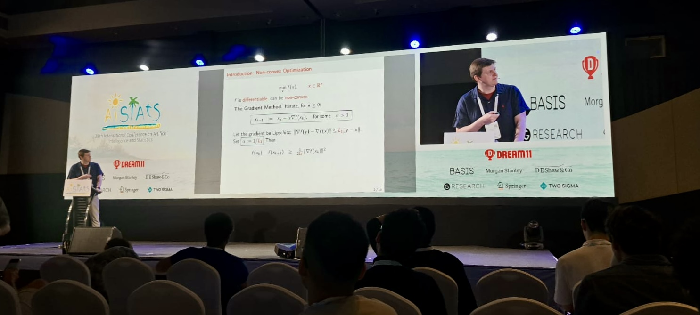
- April 9, 2025: Stochastic second-order optimization: global bounds, subspaces, and momentum, UCLouvain, Louvain-la-Neuve (slides)
- December 3, 2024: Stochastic second-order optimization: global bounds, subspaces, and momentum, WIAS, Berlin (slides)
- August 27, 2024: Spectral Preconditioning for Gradient Methods on Graded Non-convex Functions,
ALGOPT, Louvain-la-Neuve (slides) [photo↓]
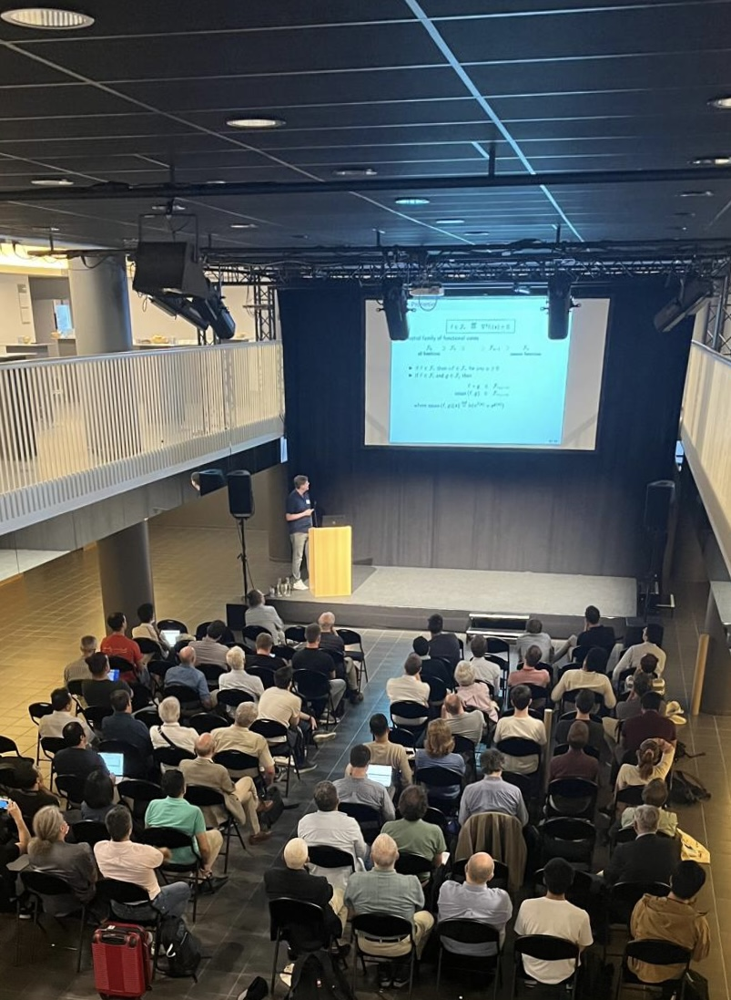
- July 1, 2024: Minimizing quasi-self-concordant functions by gradient regularization of Newton method, EURO, Copenhagen (slides)
- June 26, 2024: Spectral Preconditioning for Gradient Methods on Graded Non-convex Functions, EUROPT, Lund (slides)
- June 20, 2024: Polynomial Preconditioning for Gradient Methods, FGS-24, Gijón (slides)
- April 9, 2024: Minimizing quasi-self-concordant functions by gradient regularization of Newton method, NOPTA, University of Antwerp (slides)
- August 25, 2023: Super-Universal Regularized Newton Method, EUROPT, Budapest (slides)
- July 20, 2023: Second-Order Optimization with Lazy Hessians, ICML, Hawaii (slides, poster, video)
[photo↓]
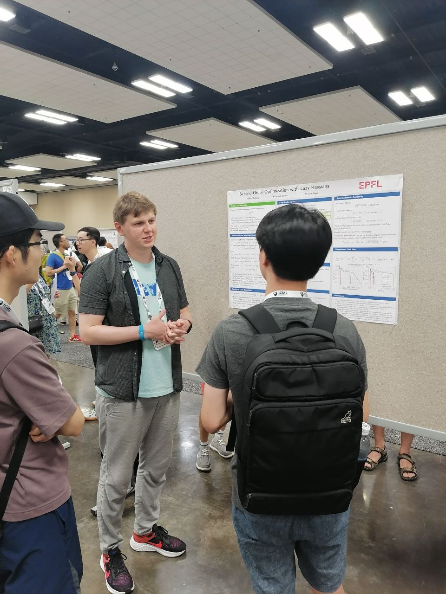
- July 19, 2023: Polynomial Preconditioning for Gradient Methods, ICML, Hawaii (poster)
- June 3, 2023: Second-Order Optimization with Lazy Hessians,
SIAM Conference on Optimization, Seattle (slides)
[photo↓]
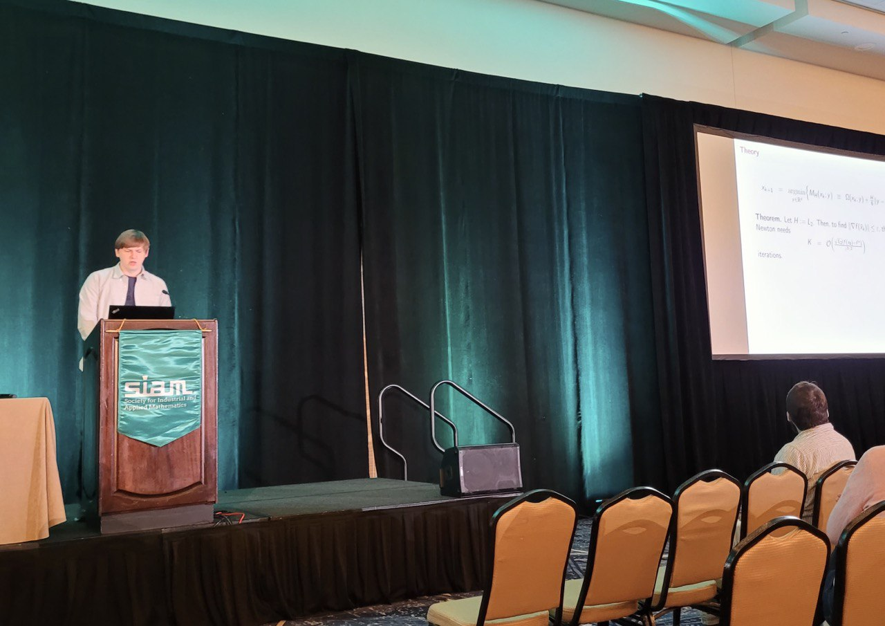
- September 27, 2022: Super-Universal Regularized Newton Method, TML Laboratory, EPFL (slides)
- July 29, 2022: Affine-invariant contracting-point methods for Convex Optimization, EUROPT, Lisbon (slides)
- June 3, 2022: Second-order methods with global convergence in Convex Optimization, the research team of Panos Patrinos, KULeuven (slides)
- May 5, 2022: Optimization Methods for Fully Composite Problems, FGP-22, Porto (slides)
- February 21, 2022: Second-order methods with global convergence in Convex Optimization, MLO Laboratory, EPFL (slides)
- July 7, 2021: Local convergence of tensor methods, EUROPT, online (slides)
- March 4, 2021: Affine-invariant contracting-point methods for Convex Optimization, Symposium on Numerical Analysis and Optimization (invited by Geovani Nunes Grapiglia), UFPR, online (slides)
- October 28, 2020: Convex optimization based on global lower second-order models, NeurIPS, online (slides, poster)
- June 17, 2020: Inexact Tensor Methods with Dynamic Accuracies, ICML, online (slides, poster, video)
- October 8, 2019: Proximal Method with Contractions for Smooth Convex Optimization, ICTEAM seminar, Louvain-la-Neuve
- September 23, 2019: Proximal Method with Contractions for Smooth Convex Optimization,
Optimization and Learning for Data Science seminar
(invited by
Dmitry Grishchenko) Université Grenoble Alpes, Grenoble
(slides)
[photo↓]
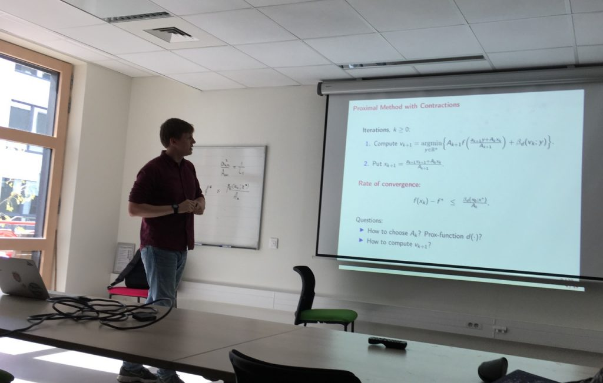
- September 18, 2019: Complexity of Cubically Regularized Newton Method for Minimizing Uniformly Convex Functions, FGS-19, Nice (slides)
- August 5, 2019: Complexity of Cubically Regularized Newton Method for Minimizing Uniformly Convex Functions, ICCOPT, Berlin
- July 5, 2019: Randomized Block Cubic Newton Method,
Summer School on Optimization, Big Data and Applications, Veroli
[photo↓]
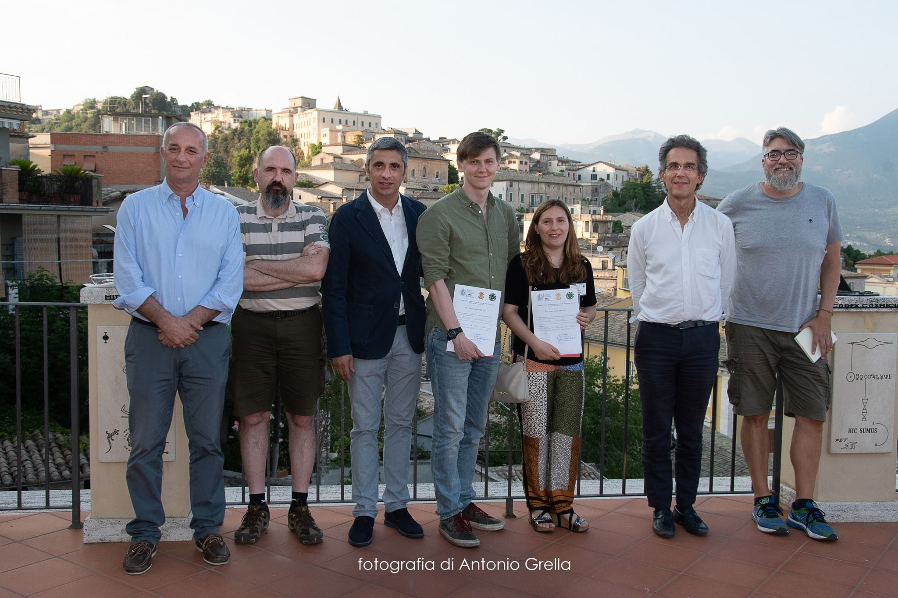
- June 28, 2019: Complexity of Cubically Regularized Newton Method for Minimizing Uniformly Convex Functions EUROPT, Glasgow
[photo↓]
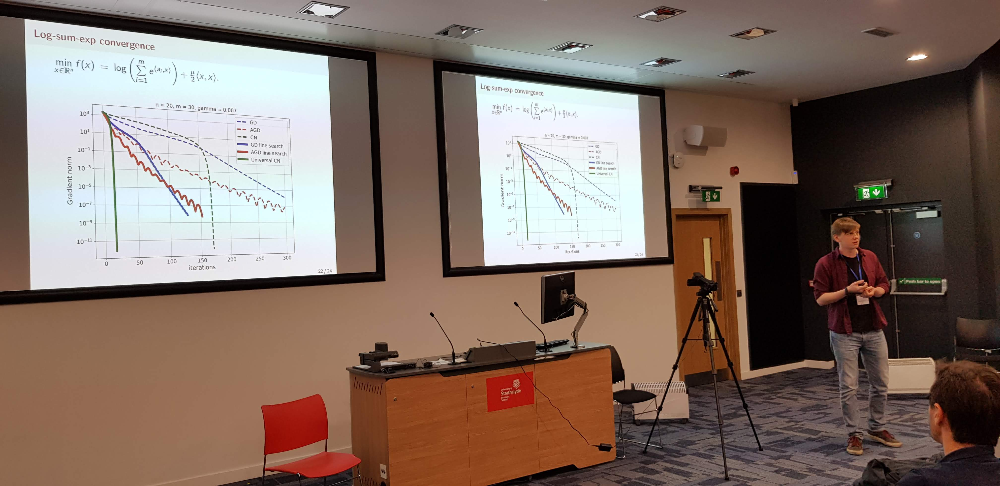
- June 20, 2018: Randomized Block Cubic Newton Method, ICML, Stockholm
(slides,
poster,
video)
[photo↓]
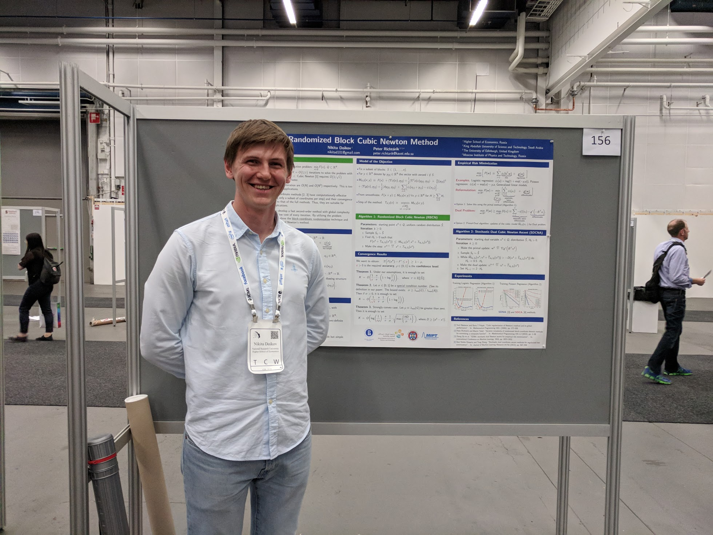
- June 13, 2018: Randomized Block Cubic Newton Method,
X Traditional summer school on Optimization, Voronovo
[photo↓]
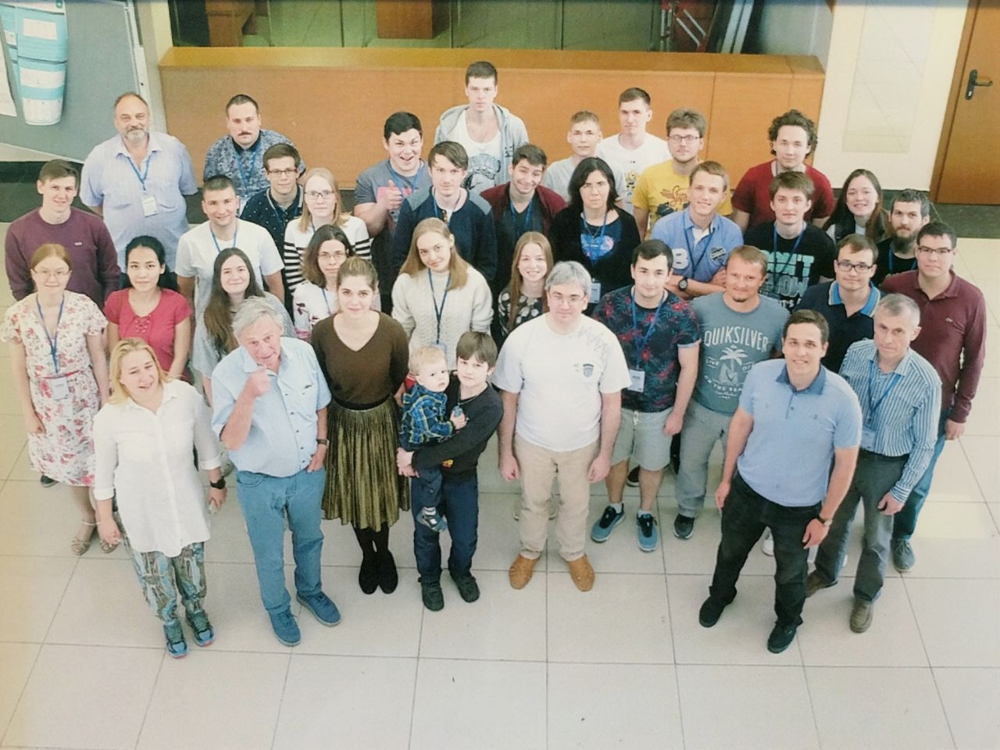